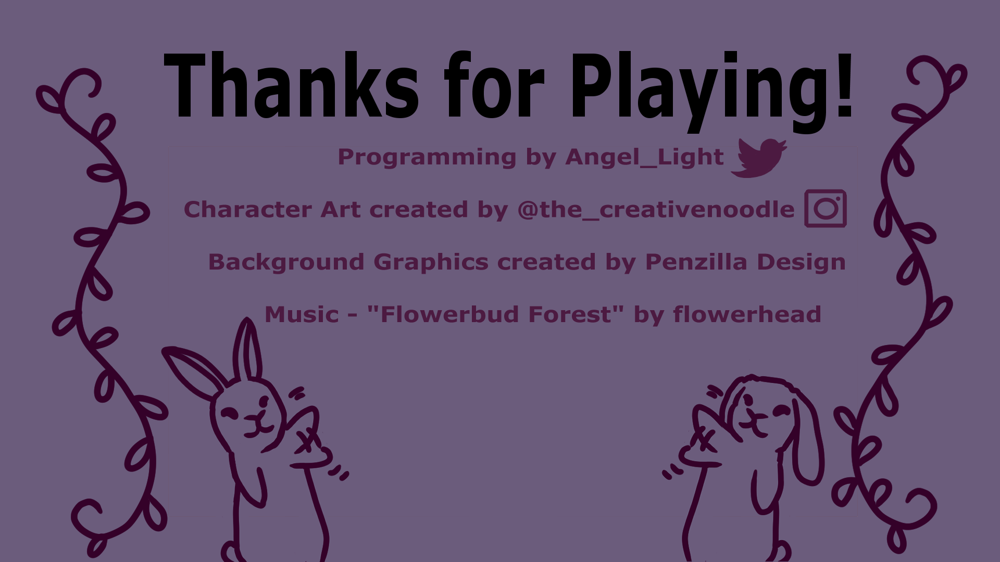

The Push and Pull is a short couch co-op only puzzle platformer about playing as two dualistic bunnies looking for a home
These bunnies have the power to push and pull things around them. The white one (Snowball) can push while the other (Pepper) can pull
You can play on Steam
At it's heart it's a game about romance, the natural push and pull that happens in a relationship. It's that concept that I used to develop the whole game. Although the characters literally exist the obstacles are all metaphorical for the trials and tribulations that come with a growing romance. One of the ways this was designed into the game is through the way players exit levels. When a player reaches a door, they can choose to move onto the next level alone or with extra effort find a way for both of them to make it to the exit and go together
I only actually started working on it when a local event was being held to practice a pitch and get critiques from vets in the industry. I wanted to pitch something with my girlfriend and I wanted to reuse some code I had made for a couch co-op project that fell through so Push and Pull came up immediately. After the pitch I spent the next month making a demo and preparing for my first expo showing off the game
At that expo people ended up really liking it, People have so much fun just pushing and pulling each other once they get the power. It's like they instantly start giggling when they start using it, I hadn't expected it to be so fun for people
This game was made by Angel Light and Creative Noodle, my lovely girlfriend. She led all the art direction and the UI as well as making all the character art. We didn't add anything into the game without talking to each other about it first which I'm pretty happy about. Originally I wanted the art to be monochrome and focus more on the metaphorical aspects by removing the characters from a real world into a very abstract environment. I'm really glad we didn't go with that since the bunnies are very cute and people love watching the bunnies kiss when you finish a level together.
Now I've release the game on Steam!
One of the things I struggled with the most was the level design. It became very difficult to design puzzles for a mix of two reasons. I was limited by own ability in programming and design. The programming issue was more of foresight, which is to say that it was a strong technical debt that limited what I could make. I had built on top of the initial prototype instead of throwing it away and restarting with lessons learned. For example I couldn't add a line of sight mechanic for the power without having to do a massive rework on the player characters that would have delayed the game. If I had focused more on architecture of the player characters or had strongly decided on the design of the game very early this wouldn't have been an issue. The other issue is my design skills were very lacking. I've spent so much time just learning how to program that this was my first real exercise in designing puzzle and I had to work with mechanics that made it harder to express my ideas. It became so laborious to do so that I spent what little time I had not working on it. I can't help but feel like if I made a better tool box it wouldn't have pained me to work on it.
